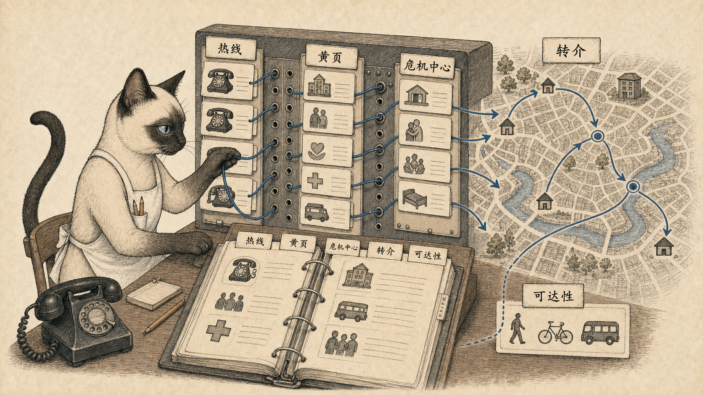

模块 01
黄页、热线与危机中心
如果一个人遇到住房、药物、暴力、性病、逃家或精神危机，却不知道打给谁，共同体就只是漂亮词。
先看图：电话交换台、城市地图和《人民黄页》被接成一张服务网络。这里的“可达”不是抽象价值，而是电话另一端有人听、有人转介、有人知道下一步。
有趣的是：《全国热线与青年危机中心目录》把热线、电话转接台、免费诊所、离家少年短住处和临时接待中心区分开来。不同机构不只是电话号码不同，能提供的帮助也不同。
为什么重要：《全球概览》 把它放在共同体开头，是在说本地知识也要被编目。正规制度之外的医疗、法律、住房、女性资源和同性恋资源，只有被找到，才真的存在。